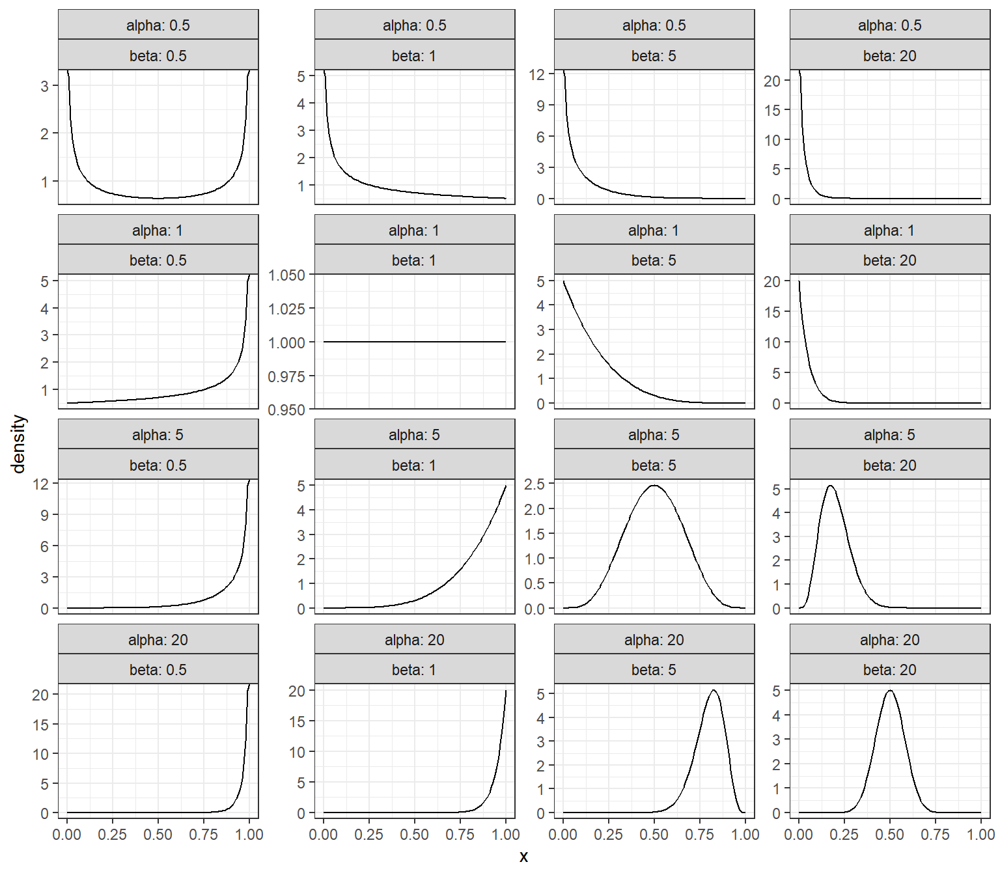
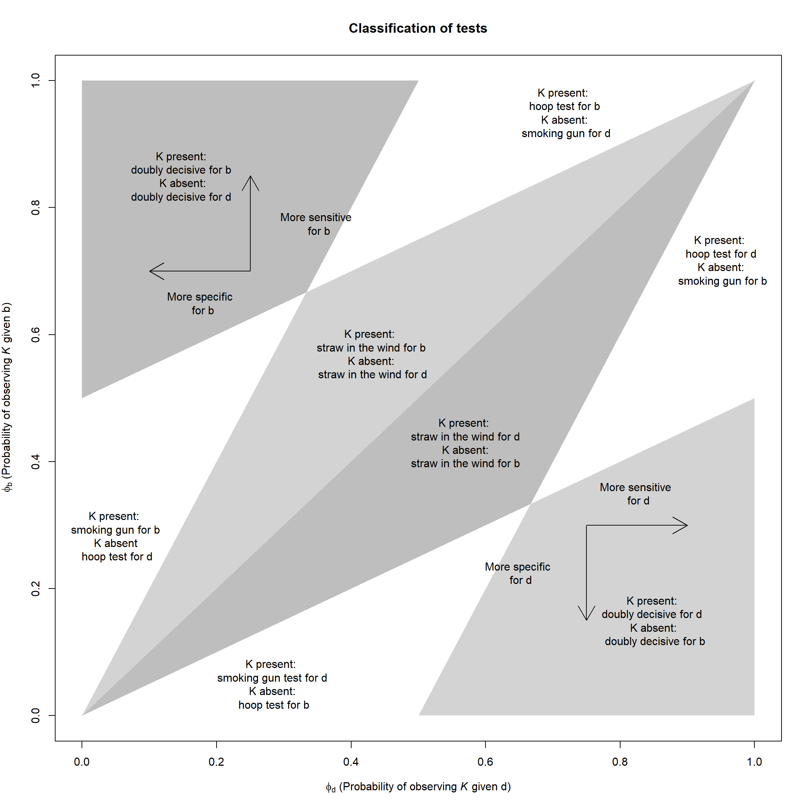
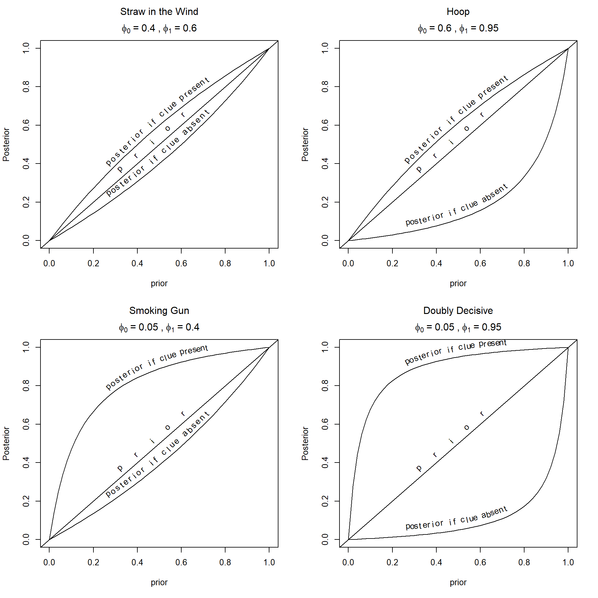

5 Bayesian Answers
Chapter summary
In this chapter, we outline the logic of Bayesian updating and show how it is used for answering causal queries. We illustrate with applications to correlational and process tracing analyses.
Bayesian methods are sets of procedures that allow us to figure out how to update beliefs in light of new information.
We begin with a prior belief about the probability that a hypothesis is true. New data then allow us to form a posterior belief about the probability of that hypothesis. Bayesian inference takes into account three considerations: the consistency of the evidence with a hypothesis, the uniqueness of the evidence to that hypothesis, and background knowledge that we have about the hypothesis.
In the next section, we review the basic logic of Bayesian updating. The following section applies that logic to the problem of updating on causal queries given a causal model and data. The last section discusses principles of learning that follow from the use of Bayesian updating.
5.1 Bayes Basics
For simple problems, Bayesian inference accords well with common intuitions about the interpretation of evidence. Once problems get slightly more complex, however, our intuitions often fail us.
5.1.1 Simple Instances
Suppose I draw a card from a deck. The chance that it is a Jack of Spades is just 1 in 52. However, suppose that I first tell you that the card is indeed a spade and then ask you what the chances are that it is a Jack of Spades. In this situation, you should guess 1 in 13. If I said it was a face card and a spade, on the other hand, you should say 1 in 3. But if I told you that the card was a heart, you should respond that there is no chance that it is a Jack of Spades.
All of these answers involve applications of Bayes’ rule in a simple setup. In each case, the answer is derived by, first, assessing what is possible, given the available information, and then assessing how likely the outcome of interest is among those states of the world that are possible. We want to know the likelihood that a card is the Jack of Spades in light of the evidence provided. We calculate this thus:1
\[\text{Prob (Jack of Spades | Info)} = \frac{\text{Is Jack of Spades Consistent with Info? (0 or 1)}}{\text{How many cards are consistent with Info?}}\]
The probability that a card is the Jack of Spades given the available information can be calculated as a function of whether or not a Jack of Spades is at all possible given the information and, if so, of how many other types of cards would also be consistent with this evidence. The probability of a Jack of Spades increases as the number of other cards consistent with the available evidence falls.
Now consider two slightly trickier examples (neither original to us).
Interpreting Your Test Results. Say that you take a diagnostic test to see whether you suffer from a disease that affects 1 in 100 people. The test is strong in the sense that, if you have the disease, it will yield a positive result with a 99% probability; and if you do not have the disease, then with a 99% probability, it will deliver a negative result. Now consider that the test result comes out positive. What are the chances you have the disease? Intuitively, it might seem that the answer is 99%—but that would be to mix up two different probabilities: the probability of a positive result if you have the disease (that’s the 99%) with the probability you have the disease given a positive result (the quantity we are interested in). In fact, the probability you have the disease, given your positive result, is only 50%. You can think of that as the share of people that have the disease among all those that test positive.
The logic is most easily seen if you think through it using frequencies (see Hoffrage and Gigerenzer (1998) for this problem and ways to address it). If 10,000 people took the test, then 100 of these would have the disease (1 in 100), and 99 of these would test positive. At the same time, 9,900 people tested would not have the disease, yet 99 of these would also test positive (the 1% error rate). So 198 people in total would test positive, but only half of them are from the group that has the disease. The simple fact that the vast majority of people do not have the disease means that, even if the false positive rate is low, a substantial share of those testing positive are going to be people who do not have the disease.
As an equation this might be written:
\[\begin{align*} \text{Probability Sick | Test} &=& \frac{\text{How many are sick and test positive?}}{\text{How many test positive overall?}}\\ &=& \frac{99}{99 + 99} \end{align*}\]
Two-Child Problem Consider, last, an old puzzle described in Gardner (1961). Mr Smith has two children, \(A\) and \(B\). At least one of them is a boy. What are the chances they are both boys? To be explicit about the puzzle, we will assume that the information that one child is a boy is given as a truthful answer to the question, “Is at least one of the children a boy?”
Assuming that there is a 50% probability that a given child is a boy, people often assume the answer is 50%. But surprisingly, the answer is 1 in 3. The reason is that the information provided rules out only the possibility that both children are girls. So the right answer is found by readjusting the probability that two children are boys based on this information. As in the Jack of Spades example, we consider all possible states of the world, ask which ones are possible given the available information, and then assess the probability of the outcome we are interested in relative to the other still-possible states. Once we have learned that \(A\) and \(B\) are not both girls, that leaves three other possibilities: \(A\) is a girl, \(B\) is a boy; \(A\) is a boy, \(B\) is a girl; \(A\) and \(B\) are both boys. Since these are equally likely outcomes, the last of these has a probability of 1 in 3. As an equation, we have:
\[\begin{align*} \text{Probability both boys | Not both girls} &=& \frac{\text{Probability both boys}}{\text{Probability not both girls}} \\ &=& \frac{\text{1 in 4}}{\text{3 in 4}} \end{align*}\]
5.1.2 Bayes’ Rule for Discrete Hypotheses
All of these examples make use of Bayes’ rule, a simple and powerful formula for deriving updated beliefs from new data.
A simple version of the formula—really the definition of a conditional probability—is:
\[ \Pr(H|d)=\frac{\Pr(H, d)}{\Pr(d)} \tag{5.1}\]
where \(H\) represents a hypothesis, and \(d\) represents a particular realization of new data (e.g., a particular piece of evidence that we might observe).
The elaborated version, which we call Bayes’ rule, can be written:
\[ \Pr(H|d)=\frac{\Pr(d|H)\Pr(H)}{\Pr(d)} = \frac{\Pr(d|H)\Pr(H)}{\sum_{H'}\Pr(d|H')\Pr(H'))} \tag{5.2}\]
where the summation runs over an exhaustive and exclusive set of hypotheses.
What this formula gives us is a way to calculate our posterior belief (\(\Pr(H|d)\)): the degree of confidence that we should have in the hypothesis after seeing the new data.
Inspecting the first line of the formula, we can see that our posterior belief derives from three considerations.
First is the strength of our prior level of confidence in the hypothesis, \(\Pr(H)\). All else equal, a hypothesis with a higher prior likelihood is going to end up having a higher posterior probability as well. The reason is that, the more probable our hypothesis is at the outset, the greater the chance that new data consistent with the hypothesis has in fact been generated by a state of the world implied by the hypothesis. The more prevalent an illness, the more likely that a positive test result has in fact come from an individual who has the illness.
Second is the likelihood \(\Pr(d|H)\): How likely are we to have observed this particular pattern in the data if the hypothesis were true? We can think of the likelihood as akin to the “true positive” rate of a test. If a test for an illness has a true positive rate of \(99\%\), this is the same as saying that there is a \(0.99\) probability of observing a positive result if the hypothesis (the person has the illness) is true.
Third is the unconditional probability of the data \(\Pr(d)\), which appears in the denominator. This quantity asks: How likely are we to have observed this pattern of the data at all, regardless of whether the hypothesis is true or false? If this data pattern is something we might expect to see even if the hypothesis is not true, then seeing this data pattern will not weigh strongly in favor of the hypothesis. If positive test results are quite common regardless of whether someone has the illness, then a positive test result should not shift our beliefs much in favor of thinking that the patient is ill.
One helpful way to think about these last two quantities is that they capture, respectively, how consistent the data are with our hypothesis and how specific the data are to our hypothesis (with specificity higher for lower values of \(\Pr(d)\)). We update more strongly in favor of our hypothesis the more consistent the data that we observe are with the hypothesis; but that updating is dampened the more consistent the data pattern is with alternative hypotheses.
As shown in the second line of Equation (5.2), \(\Pr(d)\) can be usefully written as a weighted average over different ways (alternative hypotheses, \(H'\)) in which the data could have come about. If we have three alternative hypotheses, for instance, we ask what the probability of the data pattern is under each hypothesis and then average across those probabilities, weighting each by the prior probability of its associated hypothesis.
Assessing \(\Pr(d)\) requires putting prior probabilities on an exclusive and exhaustive set of hypotheses. However, it does not require a listing of all possible hypotheses, just some exhaustive collection of hypotheses (i.e., a set whose probability adds up to 1). For example, in a murder trial, we might need to assess the unconditional probability that the accused’s fingerprints would be on the door. We can conceive of two mutually exclusive hypotheses that are collectively exhaustive of the possibilities: The accused is guilty, or they are not guilty. We can average across the probability of the accused’s fingerprints being on the door under each of these two hypotheses, weighting by their prior probabilities. What we do not have to do is decompose the “not guilty” hypothesis into a set of hypotheses about who else might be guilty. As a procedure for assessing the probability of the evidence under the not-guilty hypothesis, it might be helpful to think through who else might have done it, but there is no logical problem with working with just the two hypotheses (guilty and not guilty) since they together capture all possible states of the world. In Section Section 5.2.1.2, we work through an example in which we can calculate the probability of data conditional on some effect not being present.
Also, while the hypotheses that enter the formula have to be mutually exclusive, that does not prevent us from drawing downstream inferences about hypotheses that are not mutually exclusive. For instance, we might use Bayes’ rule to form posteriors over which one of four people is guilty: an elderly man, John; a young man, Billy; an older woman, Maria; or a young woman, Kathy. These are mutually exclusive hypotheses. However, we can then use the posterior on each of these hypotheses to update our beliefs about the probability that a man is guilty and about the probability that an elderly person is guilty. Our beliefs about whether the four individuals did it will have knock-on effects on our beliefs about whether an individual with their characteristics did it. The fact that “man” and “elderly” are not mutually exclusive in no way means that we cannot learn about both of these hypotheses from an underlying Bayesian calculation, as long as the hypotheses to which we apply Bayes’ rule are themselves mutually exclusive.
5.1.3 Continuous Parameters, Vector-valued parameters
The basic Bayesian formula extends in a simple way to continuous variables. For example, suppose we are interested in the value of some variable, \(\beta\). Rather than discrete hypotheses, we are now considering a set of possible values that this continuous variable might take on. So now our beliefs will take the form of a probability distribution over possible values of \(\beta\): essentially, beliefs about which values of \(\beta\) are more (and how much more) likely than which other values of \(\beta\). We will generally refer to a variable that we are seeking to learn about from the data as a “parameter.”
We start with a prior probability distribution over the parameter of interest, \(\beta\). Then, once we encounter new data, \(d\), we calculate a posterior distribution over \(\beta\) as:
\[p(\beta|d)=\frac{p(d|\beta)p(\beta)}{\int_{\beta'}p({d|\beta'})p(\beta')d\beta}\]
Here, the likelihood, \(p(d|\beta)\), is not a single probability but a function that maps each possible value of \(\beta\) to the probability of the observed data arising if that were the true value. The likelihood will thus take on a higher value for those values of \(\beta\) with which the data pattern is more consistent. Note also that we are using integration rather than summation in the denominator here because we are averaging across a continuous set of possible values of \(\beta\), rather than a discrete set of hypotheses.
We can then take a further step and consider learning about combinations of beliefs about the world. Consider a vector \(\theta\) that contains multiple parameters that we are uncertain about the value of, say, the levels of popular support for five different candidates. We want to learn from the data which combinations of parameter values—what level of support for candidate \(1\), for candidate \(2\), and so on– are most likely the true values. Just as for a single parameter, we can have a prior probability distribution over \(\theta\), reflecting our beliefs before seeing the data about which combinations of values are more or less likely. When we observe data (say, survey data about the performance of the five candidates in an election), we can then update to a set of posteriors beliefs over \(\theta\) using:
\[p(\theta|d)=\frac{p(d|\theta)p(\theta)}{\int_{\theta'}p({d|\theta'})p(\theta')d\theta}\]
This equation is identical to the prior one, except that we are now forming and updating beliefs about the vector-valued parameter, \(\theta\). The likelihood now has to tell us the probability of different possible distributions of support that we could observe in the survey under different possible true levels of support for these candidates. Suppose, for instance, that we observe levels of support in the survey of \(d = (12\%, 8\%, 20\%, 40\%, 20\%)\). The likelihood function might tell us that this is a distribution that we are highly likely to observe if the true distribution is, for instance \(\theta = (10\%, 10\%, 10\%, 50\%, 20\%)\) but very unlikely to observe if the true distribution is, for instance, \(\theta = (30\%, 30\%, 10\%, 5\%, 25\%)\). More generally, the likelihood function will generate a likelihood of the observed survey data for all possible combinations of values in the \(\theta\) vector. Our posterior beliefs will then shift from our prior toward that combination of values in \(\theta\) under which the data that we have observed have the highest likelihood.
5.1.4 The Dirichlet Family
Bayes’ rule requires the ability to express a prior distribution over possible states of the world. It does not require that the prior have any particular properties other than being a probability distribution. In practice, however, when dealing with continuous parameters, it can be helpful to use “off the shelf” distributions.
For the framework developed in this book, we will often be interested in forming beliefs and learning about the share of units that are of a particular type, such as the shares of units for which the nodal type for \(Y\) is \(\theta^Y_{01}, \theta^Y_{10}, \theta^Y_{00}\), or \(\theta^Y_{11}\). Formally, this kind of problem is quite similar to the example that we just discussed in which public support is distributed across a set of candidates, with each candidate having some underlying share of support. A distinctive feature of beliefs about shares is that they are constrained in a specific way: Whatever our belief about the shares of support held by different candidates might be, those shares must always add up to 1.
For this type of problem, we will make heavy use of “Dirichlet” distributions. The Dirichlet is a family of distributions that capture beliefs about shares, taking into account the logical constraint that shares must always sum to 1. We can use a Dirichlet distribution to express our best guess about the proportions of each type in a population, or the “expected” shares. We can also use a Dirichlet to express our uncertainty about those proportions.
To think about how uncertainty and learning from data operate with Dirichlet distributions, it is helpful to conceptualize a very simple question about shares. Suppose that members of a population fall within one of two groups, so we are trying to estimate just a single proportion: for example, the share of people in a population that voted (which also, of course, implies the share that did not). Our beliefs about this proportion can differ (or change) in two basic ways. For one thing, two people’s “best guesses” about this quantity (their expected value) could differ. One person might believe, for instance, that the turnout rate was most likely 0.3 while a second person might believe it was most likely 0.5.
At the same time, levels of uncertainty can also differ. Imagine that two people have the same “best guess” about the share who voted, both believing that the turnout rate was most likely around 0.5. However, they differ in how certain they are about this claim. One individual might have no information about the question and thus believe that any turnout rate between 0 and 1 is equally likely: This implies an expected turnout rate of 0.5. The other person, in contrast, might have a great deal of information and thus be very confident that the number is 0.5.
For questions about how a population is divided into two groups—say, one in which an outcome occurs, and another in which the outcome does not occur—we can capture both the expected value of beliefs and their uncertainty by using a special case of the Dirichlet distribution known as the Beta distribution. Any such question is in fact, a question about a single proportion—the proportion in one of the groups (since the proportion in which the outcome did not occur is just one minus the proportion in which it did). The Beta is a distribution over the \([0,1]\) interval, the interval over which a single proportion can range. A given Beta distribution can be described by two parameters, known as \(\alpha\) and \(\beta\). In the case where both \(\alpha\) and \(\beta\) are equal to 1, the distribution is uniform: All values for the proportion are considered equally likely. As \(\alpha\) rises, large values for the proportion are seen as more likely; as \(\beta\) rises, lower outcomes are considered more likely. If both parameters rise proportionately, then our “best guess” about the proportion does not change, but the distribution becomes tighter, reflecting lower uncertainty.
An attractive feature of the Beta distribution is that Bayesian learning from new data can be easily described. Suppose one starts with a prior distribution Beta(\(\alpha\), \(\beta\)) over the share of cases with some outcome (e.g., the proportion of people who votes), and then one observes a positive case—an individual who voted. The Bayesian posterior distribution is now a Beta with parameters \(\alpha+1, \beta\): the first parameter relating to positive cases literally just goes up by 1. More generally, if we observe \(n_1\) new positive cases and \(n_0\) new negative cases, our updated beliefs will have parameters \(\alpha+n_1, \beta +n_0\). So if we start with uniform priors about population shares, and build up knowledge as we see outcomes, our posterior beliefs should be Beta distributions with updated parameters.
Figure 5.1 shows a set of Beta distributions described by different \(\alpha\) and \(\beta\) values. In the top left, we start with a distribution that has even greater variance than the uniform, with alpha and beta both set to 0.5 (corresponding to the non-informative “Jeffrey’s prior”). In each row, we keep \(\alpha\) constant, reflecting observation of the same number of positive cases, but increase \(\beta\) reflecting the kind of updating that would occur as we observe new negative cases. As we can see, the distribution tightens around 0 as \(\beta\) increases, reflecting both a reduction in our “best guess” of the proportion positive and mounting certainty about that low proportion. As we go down a column, we hold \(\beta\) constant but increase \(\alpha\), reflecting the observation of more positive cases; we see a rightward shift in the center of gravity of each distribution and increasing certainty about that higher proportion.
Note that we can think of proportions as probabilities, and we will often write somewhat interchangeably about the two concepts in this book. To say that the proportion of units in a population with a positive outcome is 0.3 is the same as saying that there is a 0.3 probability that a unit randomly drawn from the population will have a positive outcome. Likewise, to say that a coin lands on heads with 0.5 probability is the same as saying that we expect that 0.5 of all coin tosses will be heads.
The general form of the Dirichlet distribution covers situations in which there are beliefs not just over a single proportion or probability, but over collections of proportions or probabilities. For example, if four outcomes are possible and their shares in the population are \(\theta_1, \theta_2, \theta_3\), and \(\theta_4\), then beliefs about these shares are distributions over all four-element vectors of numbers that add up to 1 (also known as a three-dimensional unit simplex).
The Dirichlet distribution always has as many parameters as there are outcomes, and these are traditionally recorded in a vector denoted \(\alpha\). Similar to the Beta distribution, an uninformative prior (Jeffrey’s prior) has \(\alpha\) parameters of \((.5,.5,.5, \dots)\) and a uniform (“flat”) distribution has \(\alpha = (1,1,1,,\dots)\). As with the Beta distribution, all Dirichlets update in a simple way. If we have a Dirichlet prior over three types with parameter \(\alpha = (\alpha_1, \alpha_2, \alpha_3)\) and we observe an outcome of type \(1\), for example, then the posterior distribution is also Dirichlet but now with parameter vector \(\alpha' = (\alpha_1+1, \alpha_2,\alpha_3)\).
5.1.5 Moments: Mean and Variance
In what follows, we often refer to the “posterior mean” or the “posterior variance.” These are simply summary statistics of the posterior distribution, or moments, and can be calculated easily once the posterior distribution is known (or approximated, see below) given data \(d\).
The posterior mean, for instance for \(\theta_1\)—a component of \(\theta\)—is \(\int \theta_1 p(\theta | d) d\theta\). Similarly, the posterior variance is \(\int (\theta_1 - (\overline{\theta}_1 | d))^2 p(\theta | d) d\theta\). In the same way we we can imagine a query that is a function of multiple parameters, for instance \(q(\theta) = \theta_3 - \theta_2\) and calculate the expected value of \(q\) using \(\hat{q}(d) = \int q(\theta) p(\theta | d) d\theta\) and the variance as \(V(q |d) = \int (q(\theta) - \hat{q}(d))^2 p(\theta | d) d\theta\).
Note that we calculate these quantities using the posterior distribution over the full parameter vector, \(\theta\). To put the point more intuitively, the most likely value of \(\theta_1\) will depend on which values of other parameters are most common and on which values of \(\theta_1\) are most likely in combination with the most common values of those other parameters. This is a point that particularly matters when the parameters of interest are dependent on each other in some way: For instance, if we are interested both in voter turnout and in the share of the vote that goes to a Democrat, and we think that these two phenomena are correlated with each other.
5.1.6 Learning
Bayesian updating is all about learning. We can see right away from Equation Equation 5.2 whether we learned anything from data \(d\). The simplest notion of learning is that our beliefs after seeing \(d\) are different than they were before we saw \(d\). That is \(\Pr(H|d) \neq \Pr(H)\). Or using Equation Equation 5.2, we have learned something if: \[\begin{equation} \frac{\Pr(d|H)\Pr(H)}{\sum_{H'}\Pr(d|H')\Pr(H'))} \neq \Pr(H) \end{equation}\]
So long as \(\Pr(H)\in(0,1)\), this can be written as:
\[ \Pr(d|H) \neq {\sum_{H'\neq H}\frac{\Pr(H')}{(1-\Pr(H))}\Pr(d|H')} \tag{5.3}\]
which simply means that the probability of \(d\) under the hypothesis is not the same as the probability of \(d\) averaged across all other hypotheses.
Two notions are useful for describing how much one can learn or is likely to learn from data: the probative value of data and the expected learning from data. We describe both here and pick up both ideas in later sections.2
To consider the simplest scenario, suppose there are two mutually exclusive and exhaustive hypotheses, \(H_0\) and \(H_1\) and that we place a prior probability of \(p\) on \(H_1\). Imagine that the available evidence can take on two values, \(K=0\) or \(K=1\). Likelihoods are described by \(\phi_0\) and \(\phi_1\), where \(\phi_0\) denotes the probability \(K=1\) under \(H_0\) and \(\phi_1\) denotes the probability \(K=1\) under \(H_1\). Equation Equation 5.2 then becomes:
\[ \Pr(H_1|K=1)=\frac{\phi_1p}{\phi_1p + \phi_0(1-p)} \tag{5.4}\]
and the condition for learning (Equation Equation 5.3) reduces to \(\phi_1 \neq \phi_0\), so long as \(p\in(0,1)\).
More generally, the informativeness of evidence depends on how different \(\phi_1\) and \(\phi_0\) are from each other: how different the likelihood of seeing that evidence is under the two hypotheses. How best to measure that difference? There are many possibilities (see Kaye (1986) for a review), but a compelling approach is to use the log of the ratio of the likelihoods. This is a simple and elegant measure that corresponds to what Isidore Jacob Good (1950) proposes in multiple contributions, a measure of the “weight of evidence.” Kaye (1986) refers to this as the most common measure of “probative value.” Fairfield and Charman (2017) also use this measure, highlighting how it provides a useful way of characterizing the impact of, and of analyzing, evidence.
Chapter summary
Probative value
Suppose that, if a hypothesis \(H\) is true, a clue \(K\) is observed with probability \(\phi_1\) (and otherwise is not observed). The probability that the clue is observed if the hypothesis is not true is denoted as \(\phi_0\). Let \(p\) refer to the prior that the hypothesis is true.
Then the “probative value” of an observed clue \(K\) is:
\[\text{Probative value} := \log\left(\frac{\phi_1}{\phi_0}\right)\]
Some features of this measure of probative value are worth noting.
First, perhaps not immediately obvious, this notion of probative value should be thought of with respect to the realized value of the clue, not the possible data that might have been found. That is, it is about the data you have, not the data you might have. Thus, a clue (if found to be present) might have weak probative value if the clue is found, but strong probative value if it is not found. To illustrate, say \(\phi_1 = \Pr(K = 1 | H_1) = 0.999\) and \(\phi_0 = \Pr(K = 1 | H = 0) = 0.333\). The probative value of the found clue is \(\log(.999/.333) = 0.47\)—a piece of evidence “barely worth mentioning” according to Jeffreys (1998). Our beliefs will shift only a little toward \(H_1\) if the clue is found. The non-appearance of the same clue, however, has strong probative value for \(H_0\). In this case, probative value is \(\log\left(\frac{\Pr(K = 0 | H_0)}{\Pr(K = 0 | H_1)}\right) = \log\left(\frac{1-\phi_0}{1-\phi_1}\right) = \log(.667/.001) = 2.82\) —“decisive” according to Jeffreys (1998).
An important implication here is that knowledge of the probative value of a clue, thus defined, is not necessarily a good guide to the selection of a clue to search for. When deciding on which evidence to go looking for, we do not know what we will find. Thus, knowing that the probative value of a clue is strong if we happen to find it—but that the clue’s absence would be minimally informative—does not tell us whether it is worth expending resources looking for that clue.
Second, this measure of probative value makes no use of our priors on the hypotheses. In fact, Irving John Good (1984)’s first desideratum of a measure of the weight of evidence is that it should be a function of \(\phi_0\) and \(\phi_1\) only. Kaye and Koehler (2003) also provide multiple arguments for the exclusion of information on priors from determinations of probative value. Yet, ignoring our prior confidence in the hypotheses when selecting clues to search for leaves us unable to tell whether we are setting ourselves up for a finding that is “decisive” or one that is “barely worth mentioning.” If \(K=1\) constitutes strong evidence in favor of \(H_1\) while \(K=0\) is weak evidence in favor of \(H_0\), it may not be worth looking for the clue if we are highly confident ex ante that \(H_0\) is right—since, under those beliefs, we are very unlikely to find \(K=1\), the evidence with high probative value.
Anticipating discussions in later chapters (especially Chapter 6 and the chapters in Part 3 of the book), we can think of a data strategy as a strategy that produces a probability distribution over the types of data that we might encounter. For instance, our data strategy might be to look for a particular clue \(K\): So we then expect to find \(K=1\) with some probability and clue \(K=0\) with some probability. Our strategy might also be much more complex, involving random sampling of cases and a search for data in later stages conditional on what we find in earlier stages. Either way, our beliefs about what we are likely to find—and thus the value of a given data strategy—are shaped by our prior beliefs about the world.
In later analyses in this book, particularly when we turn to assessing research strategies, we use a measure of learning that takes prior confidence in the hypotheses fully into account: the expected reduction in uncertainty arising from a strategy. We can think of the expected reduction in uncertainty associated with a research strategy as the difference between the variance in our prior distribution on a query and the expected posterior variance on that query under the strategy. We can also (almost equivalently) conceptualize our uncertainty as “loss,” or the (squared) errors arising from a strategy.3 So then the expected gain from a research strategy can be thought of as the reduction in loss, or squared errors, that we expect to reap when we see new data (relative to the errors we make without the new data).
How can we assess expected reductions in loss under a research strategy? For any data strategy, \(D\), we can imagine having seen different data patterns (\(d\)) that are possible under the strategy. We can then assess our beliefs about the errors we will likely make if we see and draw inferences from those possible data patterns. Finally, we can ask, prospectively, what errors we expect to make given our prior beliefs about the world and the kinds of data patterns that those beliefs imply we are most likely to observe.
Expected loss (equivalently, expected squared error or expected posterior variance) for query \(q\) and data strategy \(D\) can then be written:4
\[\mathcal{L}(q, D)=\mathbb{E}_\theta(\mathbb{E}_{{d}|\theta, D}(q(\theta)-\hat{q}({d}))^2)\]
Where \(\hat{q}(d)\) is the expected value of the query after observing data \(d\). To describe the reduction in loss that flows from strategy \(D\), we need to calculate the loss metric a second time, this time using the prior distribution. Since our loss is defined as expected squared errors, this is simply the prior variance. We can then define the expected learning from a data strategy as follows (Definition 5.1).
Definition 5.1
Let \(V(q)>0\) denote prior variance on query \(q\) and \(\mathcal{L}(q, D)\) the expected error on \(q\) from implementation of data strategy \(D\). Then:
\[\begin{eqnarray*} \text{Expected learning}(q, D) &:=& 1 - \frac{\mathcal{L}(q, D)}{V(q)} \end{eqnarray*}\]
Note that expected learning ranges between 0 and 1. It is 1 when \(\mathcal{L}(q, D) = 0\)—when we expect to end up with no uncertainty about the query after implementing the data strategy. And expected learning is 0 when \(\mathcal{L}(q, D) = V(q)\)—when we expect no reduction in uncertainty.
Returning to our running illustration, suppose that if a hypothesis \(H_1\) is true, then \(K=1\) is observed with probability \(\phi_1\) (and otherwise is not observed). If \(H_0\) is true, then the clue is observed with probability \(\phi_0\). Let \(p\) denote the prior probability that \(H_1\) is true. Then, the prior uncertainty is \(V(H_1) = p(1-p)\). The expected loss under the data strategy of looking for \(K\) is calculated by assessing (squared) errors in four situations—defined by whether \(H_1\) or \(H_0\) is true, and by whether or not we observe \(K=1\) when we go looking for it. We can use our priors and \(\phi\) likelihoods to put a probability on each of these four situations, giving the expected loss as: \[\begin{eqnarray} \mathcal{L} &=& p\phi_1 \left(1-\frac{\phi_1 p}{\phi_1 p + {\phi_0 (1-p)}}\right)^2 + \\ && p(1-\phi_1) \left(1-\frac{(1-\phi_1)p}{(1-\phi_1) p + {(1-\phi_0) (1-p)}}\right)^2 +\\ && (1-p)\phi_0\left(0-\frac{\phi_1 p}{\phi_1 p + {\phi_0 (1-p)}}\right)^2 + \\ && (1-p)(1-\phi_0)\left(0-\frac{(1-\phi_1)p}{(1-\phi_1) p + {(1-\phi_0) (1-p)}}\right)^2 \end{eqnarray}\]
Putting these together (and simplifying), expected learning would then be:
\[\begin{eqnarray*} \text{Expected learning} &=& \frac{(\phi_1-\phi_0)^2p(1-p)}{\phi_0(1-\phi_0) - (\phi_1-\phi_0)^2p^2-(\phi_1-\phi_0)p(2\phi_0-1)} \end{eqnarray*}\]
This expression takes still simpler forms in special situations. For instance, in the situation in which \(p = 0.5\) we have:
\[\text{Expected learning} = \frac{(\phi_1-\phi_0)^2}{ 2(\phi_1+\phi_0)- (\phi_1 +\phi_0)^2}\]
Notably, this expression has some commonalities with probative value. Expected learning—like probative value—is clearly 0 when \(\phi_1 = \phi_0\)—that is, when a clue is just as likely under an alternative hypothesis as under a given hypothesis (as we saw above already). In addition, expected learning is bounded by 0 and 1, and is largest when the probative value is greatest—when \(\phi_1=1\) and \(\phi_0 =0\) (or vice versa).
But there nevertheless are disagreements. Compare, for instance, two clues we could go looking for, \(K_1\) and \(K_2\). For \(K_1\), suppose that we have \((\phi_1 = 0.99, \phi_0 = 0.01)\), while for \(K_2\), we have \((\phi_1 = 0.099, \phi_0 = 0.001)\). The probative value measure does not distinguish between these two clues: The probative value of finding the two clues is the same. However, with \(p=0.5\), the expected learning from searching for the two clues is very different: Expected learning from a search for \(K_1\) is very large (an expected 95% reduction in variance), but expected learning for \(K_2\) is small (5% reduction). This is because we do not expect to observe \(K_2\) when we look for it, and we learn little if it is sought but not found.
We can also have clues for which the expected learning is the same but the probative value of a clue found differs greatly: For instance, still with \(p = 0.5\), if we have \(K_3\) with\((\phi_1 = 0.9, \phi_0 = 0.5)\) and \(K_4\) with \((\phi_1 = 0.5, \phi_0 = 0.1)\)).
A nice feature of the expected learning measure is that the concept generalizes easily to more complex research situations—for instance, to situations in which the decision to search for one clue depends on what we find when we search for a prior clue. Moreover, variants of the measure can be produced for different loss functions that reflect researcher desiderata when embarking on a research project.
5.1.7 Bayes Estimation in Practice
Although the principle of Bayesian inference is quite simple, in practice generating posteriors for continuous parameters is computationally complex. With continuous parameters, there is an infinity of possible parameter values, and there will rarely be an analytic solution—a way of calculating the posterior distribution. Instead, researchers use some form of sampling from the parameter “space” to generate an approximation of the posterior distribution.
Imagine, for instance, that you were interested in forming a posterior belief about the share of U.S. voters intending to vote Democrat, given polling data. (This is not truly continuous, but it might as well be with large elections.)
One approach would be to coarsen the parameter space: We could calculate the probability of observing the polling data given a discrete set of possible values, for example, \(\theta = 0, \theta = 0.1, \theta = 0.2, \dots, \theta = 1\). We could then apply Bayes’ rule to calculate a posterior probability for each of these possible true values. The downside of this approach, however, is that, for a decent level of precision, it becomes computationally expensive to carry out with large parameter spaces—and parameter spaces get large quickly. For instance, if we are interested in vote shares, we might find \(0.4, 0.5\), and \(0.6\) too coarse and want posteriors for 0.51 or even 0.505. The latter would require a separate Bayesian calculation for each of 200 parameter values. And if we had two parameters that we wanted to slice up each into 200 possible values, we would then have 40,000 parameter pairs to worry about. What’s more, most of those calculations would not be very informative if the plausible values lie within some small (though possibly unknown) range—such as between 0.4 and 0.6.
An alternative approach is to use variants of Markov Chain Monte Carlo (MCMC) sampling. Under MCMC approaches, parameter vectors—possible combinations of values for the parameters of interest—are sampled, and their likelihood is evaluated. If a sampled parameter vector is found to have a high likelihood, then new parameter vectors near it are drawn with a high probability in the next round. Based on the likelihood associated with these new draws, additional draws are then made in turn. We are thus sampling more from the parts of the posterior distribution that are closer to the most probable values of the parameters of interest, and the result is a chain of draws that build up to approximate the posterior distribution. The output from these procedures is not a set of probabilities for every possible parameter vector but rather a set of draws of parameter vectors from the underlying (but not directly observed) posterior distribution.
Many algorithms have been developed to achieve these tasks efficiently. In all of our applications using the CausalQueries software package, we rely on the stan procedures, which use MCMC methods: specifically, the Hamiltonian Monte Carlo algorithm and the no-U-turn sampler. Details on these approaches are given in the Stan Reference Manual (Stan et al. 2020).
5.2 Bayes Applied
5.2.1 Simple Bayesian Process Tracing
Process tracing, in its most basic form, seeks to use within-case evidence to draw inferences about a case. We first outline the logic of Bayesian process tracing without explicit reference to a causal model, and then introduce how Bayesian process tracing can be underpinned by a causal model.
To begin without a model: Suppose we want to know whether \(X\) caused \(Y\) in a case, and we use data on a within-case “clue,” \(K\), to make an inference about that question. We refer to the within-case evidence gathered during process tracing as clues in order to underline their probabilistic relationship to the causal relationship of interest. Readers familiar with the framework in Collier, Brady, and Seawright (2004) can usefully think of “clues” as akin to causal process observations, although we highlight that there is no requirement that the clues be generated by the causal process connecting \(X\) to \(Y\).
As we will show, we can think of our question — did \(X\) taking on the value it did in this case cause \(Y\) to take on the value it did — as a question about the case’s nodal type for \(Y\). So, to make inferences, the analyst looks for clues that will be observed with some probability if the case is of a given type and that will not be observed with some probability if the case is not of that type.
It is relatively straightforward to express the logic of process tracing in Bayesian terms. As noted by others (e.g., Bennett (2008), Beach and Pedersen (2013), Rohlfing (2012)), there is an evident connection between the use of evidence in process tracing and Bayesian inference. See Fairfield and Charman (2017) for a detailed treatment of a Bayesian approach to qualitative research. As we have shown elsewhere, translating process tracing into Bayesian terms can also aid the integration of qualitative with quantitative causal inferences (Humphreys and Jacobs (2015)).
To illustrate, suppose we are interested in economic crisis as a possible cause of regime collapse. We already have \(X,Y\) data on one authoritarian regime: We know that it suffered an economic crisis (\(X=1\)) and collapsed (\(Y=1\)). We want to know what caused the collapse: Was it the economic crisis or something else? To make progress, we will try to draw inferences given a “clue.” Beliefs about the probabilities of observing clues for cases with different causal effects derive from theories of, or evidence about, the causal process connecting \(X\) and \(Y\). Suppose we theorize that the mechanism through which economic crisis generates collapse runs via diminished regime capacity to reward its supporters during an economic downturn. A possible clue to the operation of a causal effect, then, might be the observation of diminishing rents flowing to regime supporters shortly after the crisis. If we believe the theory – and using the \(a, b, c, d\) notation for types from Chapter 2 – then this is a clue that we might believe to be highly probable for cases of type \(b\) that have experienced economic crisis (those for which the crisis in fact caused the collapse) but of low probability for cases of type \(d\) that have experienced crisis (those for which the collapse occurred for other reasons).
To make use of Bayes’ rule we need to:
- define our parameters
- provide prior beliefs about the parameters
- define a likelihood function—indicating the probability of observing different data patterns given stipulated parameters
- provide the “probability of the data”—this can be calculated from 2. and 3.
- plug these into Bayes’ rule to calculate a posterior on the parameters
We can then calculate the posterior on any quantity of interest that can be formed by combining or transforming these parameters.
We discuss each of these steps in turn. We start with the simplest situation where we want to assess whether \(X\) caused \(Y\).
Parameters. The inferential challenge is to determine whether the regime collapsed because of the crisis (it is a \(b\) type) or whether it would have collapsed even without it (\(d\) type). We do so using further information from the case—one or more clues.
Let \(\theta\in \{a,b,c,d\}\) refer to the type of an individual case. In this initial setup, our hypothesis consists simply of a belief about \(\theta\) for the case under examination: Specifically, whether the case is a \(b\) type (\(\theta=b)\). The parameter of interest is the causal type, \(\theta\).
We first assume that we know the likelihood and then walk through deriving the likelihood from a causal model.
5.2.1.1 Known Priors and Known Likelihood
We imagine first that the priors and the likelihood can simply be supplied by the researcher.
Prior. We let \(p\) denote a prior degree of confidence assigned to the hypothesis (\(p = Pr(H)\)). This is, here, our prior belief that an authoritarian regime that has experienced an economic crisis is a \(b\).
Likelihood. We use the variable \(K\) to register the outcome of the search for a clue, with \(K_1\) indicating that a specific clue is searched for and found, and \(K_0\) indicating that the clue is searched for and not found. The likelihood, \(\Pr(K=1|H)\) is the probability of observing the clue, when we look for it in our case, if the hypothesis is true—that is, here, if the case is a \(b\) type. The key feature of a clue is that the probability of observing the clue is believed to depend on the case’s causal type. In order to calculate the probability of the data, we will in fact, need two such probabilities: We let \(\phi_b\) denote the probability of observing the clue for a case of \(b\) type (\(\Pr(K=1|\theta=b)\)), and \(\phi_d\) the probability of observing the clue for a case of \(d\) type (\(\Pr(K=1|\theta=d)\)). The key idea in many accounts of process tracing is that the differences between these probabilities provide clues with probative value, that is, the ability to generate learning about causal types. The likelihood, \(\Pr(K=1|H)\), is simply \(\phi_b\).
Probability of the data. This is the probability of observing the clue when we look for it in a case, regardless of its type, \((\Pr(K=1))\). More specifically, it is the probability of the clue in an \(X = 1\) case with a positive outcome \(Y = 1\). As such a case can only be a \(b\) or a \(d\) type, this probability can be calculated simply from \(\phi_b\) and \(\phi_d\), together with our prior beliefs about how likely an \(X=1, Y=1\) case is to be a \(b\) or a \(d\) type.
This probability aligns (inversely) with Van Evera’s (1994) concept of “uniqueness.”
Inference. We can now apply Bayes’ rule to describe the learning that results from process tracing. If we observe the clue when we look for it in the case, then our posterior belief in the hypothesis that the case is of type b is:
\[\begin{eqnarray*} \Pr(\theta = b |K=1, X=Y=1)= \frac{\phi_b p }{\phi_b p+\phi_d (1-p)} \end{eqnarray*}\]
In this exposition, we did not use a causal model in a meaningful way—we simply needed the priors and the clue probabilities.
5.2.1.2 Process Tracing with a Model: Derived Priors, Derived Likelihood
A central claim of this book is that the priors and likelihoods that we use in Bayesian process tracing do not need to be treated as primitives or raw inputs into our analysis: They can themselves be justified by an underlying—“lower level”— causal model. When we ground process tracing in a causal model, we can transparently derive our priors and the likelihoods of the evidence from a set of explicitly stated substantive beliefs about how the world works. As we elaborate below, grounding process tracing in a model also helpfully imposes a kind of logical consistency on our priors and likelihoods as they all emerge from the same underlying belief set.
We elaborate this point in much greater detail later, but we illustrate at a high level how Bayesian updating from a causal model works. Imagine a world in which an \(X, Y\) relationship is completely mediated by \(K\): So we have the structural causal model \(X \rightarrow K \rightarrow Y\). Moreover, suppose, from prior observations of the conditional distribution of outcomes given their causes, we mobilize background knowledge that:
- \(\Pr(K=1 | X=0) = 0\), \(\Pr(K=1 | X=1) = 0.5\)
- \(\Pr(Y=1 | K=0) = 0.5\), \(\Pr(Y=1 | K=1) = 1\)
This background knowledge is consistent with a world in which units are equally split between \(b\) and \(c\) types in the first step (which we will write as \(b^K\), \(c^K\)), and units are equally split between \(b\) and \(d\) types in the second step (\(b^Y\), \(d^Y\)). To see this, note that these probabilities are inconsistent with adverse effects at each stage. The differences in means then correspond to the share of types with positive effects.
We can calculate the types for the \(X\) causes \(Y\) relationship (\(\theta\)) by combining types for each step. For instance, if a unit is a \((b^K, b^Y)\) then it has type \(\theta=b\) overall. If it is \(d^Y\) in the final step, then it is a \(d\) overall and so on.
Assume that the case at hand is sampled from this world.
Then, we can calculate that the prior probability, \(p\), that \(X\) caused \(Y\) given \(X=Y=1\) is \(p = \frac13\). Given \(X=1\), the observation of \(Y=1\) is consistent with \(b\) types at both stages, a situation that our background knowledge tells us arises with probability 0.25; or with a \(d\) type in the second stage, which arises with probability 0.5. The conditional probability that \(X\) caused \(Y\) in this case is, therefore, \(0.25/0.75 = 1/3\).
We can also use Table 5.1 to figure out the priors—where, to be clear, we mean beliefs prior to observing \(K\) albeit posterior to observing \(X\) and \(Y\). Here, we represent the four combinations of types at the two stages that are consistent with our background knowledge. We place a prior on each combination, also based on this background knowledge. If the \(X \rightarrow K\) effect is a \(b\) type 50% of the time and a \(c\) type 50% of the time, while the \(K \rightarrow Y\) stage is half \(b\)’s and half \(d\)’s, then we will have each combination a quarter of the time.
We can then calculate the probability that \(K=1\) for a treated \(b\) and \(d\) case respectively as \(\phi_b=1\) and \(\phi_d=0.5\). We can work this out as well from Table 5.1. For \(\phi_b\), the probability of \(K=1\) for a \(b\) type, we take the average value for \(K|X=1\) in the rows for which \(\theta = b\)—which in this case is just the first row, where the value of \(K|X=1\) is \(1\). For \(\phi_d\), we take the average value of \(K|X=1\) in the rows for which \(\theta = d\): \((1 + 0)/2 = 0.5\). Note that, when we average across possible states of the world, we weight each state by its prior probability (though this weighting falls away here since the priors are the same for each row).
| \(\theta^K\) | \(\theta^Y\) | \(\theta\) | \(K|X=1\) | \(Y|X=1\) | \(\theta = b| X=Y=1\) | \(\theta =b| X=Y=K=1\) |
|---|---|---|---|---|---|---|
| \(b^K\) | \(b^Y\) | \(b\) | 1 | 1 | TRUE | TRUE |
| \(b^K\) | \(d^Y\) | \(d\) | 1 | 1 | FALSE | FALSE |
| \(c^K\) | \(b^Y\) | \(c\) | 0 | 0 | . | . |
| \(c^K\) | \(d^Y\) | \(d\) | 0 | 1 | FALSE | . |
Then, using Bayes’ rule (Equation Equation 5.2) we can calculate the updated belief via:
\[\begin{eqnarray*} \Pr(\theta = b |K=1, X=Y=1)&=&\frac{1\times \frac13}{1 \times \frac13 + \frac12 \times \frac23}\\ &=& \frac12 \end{eqnarray*}\]
We can also read the answer by simply taking the average value of the last column of Table 5.1, which has entries only for those cases in which we have \(X=1\), \(Y=1\) and \(K=1\). Counting \(TRUE\) as \(1\) and \(FALSE\) as \(0\), we get an average of \(0.5\). Thus, upon observing the clue \(K=1\) in an \(X=1, Y=1\) case, we shift our beliefs that \(X=1\) caused \(Y=1\) from a prior of \(\frac13\) to a posterior of \(\frac12\). In contrast, had we observed \(K=0\), our posterior would have been 0.
One thing that these calculations demonstrate is that, as a practical matter, we do not have to go through the process of calculating a likelihood to engage in Bayesian updating. If we can directly calculate \(\Pr(H,d)\) and \(\Pr(d)\), then we can make direct use of Equation Equation 5.1 instead of Equation Equation 5.2.
A few broader lessons for Bayesian process tracing are worth highlighting.
First, we see that we can draw both our priors on a hypothesis and the probative value of the evidence from the same causal model. A model-free approach to Bayesian process tracing might encourage us to think of our priors and the probative values of the evidence as independent quantities. We might be tempted to engage in thought experiments examining how inferences change as priors change (as we did, e.g., in the treatment in Humphreys and Jacobs (2015)), keeping probative value fixed. But such a thought experiment may entertain values of the relevant probabilities that cannot be jointly justified by any single plausible underlying belief about how the world works. A model forces a kind of epistemic consistency on the beliefs entering into process tracing. If we altered the model used in the above illustration—for example, if we had a stronger first stage and so a larger value for \(\Pr(K=1|X=0)\)—this would alter both our prior, \(p\), and our calculations of \(\phi_d\).
Second, we see that, when we use a causal model, our priors and the probative value of evidence can, in principle, be justified by prior data. For instance, in this case, we show how the relevant probabilities can be derived from patterns emerging from a series of experiments (and a belief that the case at hand is not different from—“exchangeable with”—those in the experiment). We can thus place a lighter burden on subjective beliefs.
Third, contrary to some advice (e.g., Fairfield and Charman (2017), Table 3) we can get by without a full specification of all alternative causes for \(Y=1\). Thinking through alternative hypotheses may be a very useful exercise for assessing subjective beliefs, but as a general matter, it is not necessary and may not be helpful. Our background model and data give enough information to figure out the probability that \(K=1\) if \(X\) did not cause \(Y\). To be clear, we do not here assume that other causes do not exist; rather, we simply are not required to engage with them to engage with inference.
Fourth, this basic procedure can be used for many different types of queries, background models, and clue types. Nothing here is tied to a focus on the treatment effects emanating from a single cause for a single unit when researchers have access to a single mediator clue. The generalization is worked through in Chapter 7, but the core logic is all in this example already.
5.2.1.3 Connection with Classical Qualitative Tests
The example we discussed in the last section was of a “hoop test,” one of the four classical tests (“smoking gun,” “hoop,” “straw in the wind,” and “doubly decisive”) described by Van Evera (1997) and Collier (2011). Seeing the clue led to a modest boost in confidence in the hypothesis, while not seeing the clue fully disconfirmed the hypothesis. In Chapter 15 we show how all these tests can be derived from more fundamental causal models in the same way.
The hoop test in this example makes use of an extreme probability—a probability of 0 of not seeing a clue if a hypothesis is true. But the core logic of process-tracing tests does not depend on such extreme probabilities. Rather, the logic described here allows for a simple generalization of Van Evera’s typology of tests by conceiving of the certainty and uniqueness of clues as lying along a continuum. In this sense, the four tests might be thought of as special cases—particular regions that lie on the boundaries of a “probative-value space.”

To illustrate the idea, we represent the range of combinations of possible probabilities for \(\phi_b\) and \(\phi_d\) as a square in Figure 5.2 and mark the spaces inhabited by Van Evera’s tests. As can be seen, the type of test involved depends on both the probative value of the clue for the proposition that the unit is a \(b\) type (monotonic in \(\phi_b/\phi_d\)) and the probative value of the absence of the clue for the proposition that the units is a \(d\) type (monotonic in \((1-\phi_d)/(1-\phi_b)\)). A clue acts as a smoking gun for proposition “\(b\)” (the proposition that the case is a \(b\) type) if it is highly unlikely to be observed if proposition \(b\) is false, and more likely to be observed if the proposition is true (bottom left, above diagonal). A clue acts as a “hoop” test if it is highly likely to be found if \(b\) is true, even if it is still quite likely to be found if it is false. Doubly decisive tests arise when a clue is very likely if \(b\) and very unlikely if not. It is, however, also easy to imagine clues with probative values lying in the large space between these extremes.5
5.2.2 A Generalization: Bayesian Inference on Arbitrary Queries
In Chapter 4, we described queries of interest as queries over causal types.
Returning to our discussion of queries in Chapter 4, suppose we start with the model \(X \rightarrow M \rightarrow Y\), and our query is whether \(X\) has a positive effect on \(Y\). This is a query that is satisfied by four sets of causal types: those in which \(X\) has a positive effect on \(M\) and \(M\) has a positive effect on \(Y\), with \(X\) being either 0 or 1; and those in which \(X\) has a negative effect on \(M\) and \(M\) has a negative effect on \(Y\), with \(X\) being either 0 or 1. Our inferences on the query will thus involve gathering these different causal types, and their associated posterior probabilities, together. As we showed in Chapter 4, the same is true for very complex causal estimands.
Once queries are defined in terms of causal types, the formation of beliefs, given data \(d\), about queries follows immediately from application of Equation Equation 5.1.
Let \(Q(q)\) define the set of types that satisfy query \(q\), and let \(D(d)\) denote the set of types that generate data \(d\) (recall that each causal type, if fully specified, implies a data type).
The updated beliefs about the query are given by the distribution:
\[p(q' | d) = \int_{Q(q')} p(\theta|d)d\theta = \frac{\int_{Q(q') \cap D(d)} p(\theta)d\theta}{\int_{D(d)}p(\theta') d\theta'}\]
This expression gathers together all the causal types (combinations of nodal types) that satisfy a query and assesses how likely these are, collectively, given the data.6
Return now to Mr. Smith’s puzzle from Section 5.1.1. We can think of the two “nodal types” here as the sexes of the two children, child \(A\) and child \(B\). The query here is \(q\): “Are both boys?” The statement “\(q=1\)” is equivalent to the statement, “\(A\) is a boy & \(B\) is a boy.” Thus it takes the value \(q=1\) under just one causal type, when both nodes have been assigned to the value “boy.” Statement \(q=0\) is the statement “\(A\) is a boy & \(B\) is a girl” or “\(A\) is a girl & \(B\) is a boy” or “\(A\) is a girl & \(B\) is a girl”. Thus, \(q=0\) in three contexts. If we assume that each of the two children is equally likely to be a boy or a girl with independent probabilities, then each of the four contexts is equally likely. The result can then be figured out as \(p(q=1) = \frac{1\times \frac{1}{4}}{1\times \frac{1}{4} + 1\times \frac{1}{4}+1\times \frac{1}{4}+0\times \frac{1}{4}} = \frac{1}{3}\). This answer requires summing over only one causal type. The quantity \(p(q=0)\) is of course, the complement of this, but using Bayes’ formula one can see that it can also be found by summing over the posterior probability of the three causal types for which the statement \(q=0\) is true.
5.3 Features of Bayesian Updating
Bayesian updating has implications that may not be obvious at first glance. These will matter for all forms of inference we examine in this book, but they can all be illustrated in simple settings.
5.3.1 Priors Matter
As we noted in the previous section, probative value does not depend upon priors. However, the amount of learning that results from a given piece of new data can depend strongly on prior beliefs. We have already seen this with the example of interpreting our test results above. Figure 5.3 illustrates the point for process tracing inferences.

In each subgraph of Figure 5.3 , we show how much learning occurs under different scenarios. The horizontal axis indicates the level of prior confidence in the hypothesis, and the curve indicates the posterior belief that arises if we do (or do not) observe the clue. We label the figures referencing classic tests that they approximate though, of course, there can be stronger or weaker versions of each of these tests.
As can be seen, the amount of learning that occurs—the shift in beliefs from prior to posterior—depends a good deal on what prior we start out with. For the smoking gun example (with probative value of just 0.9—substantial, but not strong, according to Jeffreys (1998)), the amount of learning is highest for values around 0.25—and then declines as we have more and more prior confidence in our hypothesis. For the hoop test (also with probative value of just 0.9), the amount of learning when the clue is not observed is greatest for hypotheses in which we have middling-high confidence (around 0.75), and minimal for hypotheses in which we have a very high or a very low level of confidence. At the maximum, beliefs change from 0.74 to 0.26—-a nearly two thirds down weighting of the proposition.
The implication here is that our inferences with respect to a hypothesis must be based not just on the search for a clue predicted by the hypothesis but also on the plausibility of the hypothesis, based on other things we know.
We emphasize two respects in which these implications depart from common intuitions.
First, we cannot make general statements about how decisive different categories of test, in Van Evera’s framework, will be. It is commonly stated that hoop testsare devastating to a theory when they are failed, while smoking gun tests provide powerful evidence in favor of a hypothesis. But, in fact the amount learned depends not just on features of the clues but also on prior beliefs.
Second, although scholars frequently treat evidence that goes against the grain of the existing literature as especially enlightening, in the Bayesian framework the contribution of such evidence may sometimes be modest, precisely because received wisdom carries weight. Thus, although the discovery of disconfirming evidence—an observation thought to be strongly inconsistent with the hypothesis—for a hypothesis commonly believed to be true is more informative (has a larger impact on beliefs) than confirming evidence, this does not mean that we learn more than we would have if the prior were weaker. It is not true as a general proposition that we learn more the bigger the “surprise” a piece of evidence is. The effect of disconfirming evidence on a hypothesis about which we are highly confident can be smaller than it would be for a hypothesis about which we are only somewhat confident. When it comes to very strong hypotheses, the “discovery” of disconfirming evidence is very likely to be a false negative; likewise, the discovery of supporting evidence for a very implausible hypothesis is very likely to be a false positive. The Bayesian approach takes account of these features naturally.7
5.3.2 Simultaneous, joint updating
When we update, we often update over multiple quantities. When we see a smoking gun, for instance, we might update our beliefs that the butler did it, but we might also update our beliefs about how likely we are to see smoking guns—maybe they are not as rare as we thought.
Intuitively we might think of this updating as happening sequentially—first of all, we update over the general proposition, then we update over the particular claim. But in fact, it’s simpler to update over both quantities at once. What we need to avoid is just updating over some of the unknown quantities while keeping others fixed.
As a simple illustration, say we thought there were a two thirds chance that we were in World A in which K serves as a smoking gun test and a one third chance that were in world B in which K provides a hoop test. Specifically, we have:
World A:
- \(\Pr(H = 0, K=0| W = A) = \frac{1}3\)
- \(\Pr(H = 0, K =1 | W = A) = 0\)
- \(\Pr(H= 1, K = 0 | W = A) = \frac{1}3\)
- \(\Pr(H = 1, K = 1 | W = A) = \frac{1}3\)
World B:
- \(\Pr(H = 0, K=0| W = B) = \frac{1}3\)
- \(\Pr(H = 0, K =1 | W = B) = \frac{1}3\)
- \(\Pr(H= 1, K = 0 | W = B) = 0\)
- \(\Pr(H = 1, K = 1 | W = B) = \frac{1}3\)
What should we infer when we see \(K=1\). If we knew we were in World A, then on learning \(K=1\) we would be sure that \(H=1\); whereas if we knew that we were in World B, then on learning \(K\) we would put the probability that \(H = 1\) at 0.5. We might be tempted to infer that the expected probability that \(H = 1\) is then \(\frac23 \times 1 + \frac13 \times \frac12 = \frac{5}6\).
This is incorrect because when we observe \(K=1\) we need to update not just on our inferences given whatever world we are in, but also our beliefs about what world we are in. We might tackle the problem in three ways.
First, we might simplify. Integrating over worlds the joint probabilities for \(H\) and \(K\) are:
Average World:
- \(\Pr(H = 0, K=0) = \frac{1}3\)
- \(\Pr(H = 0, K =1) = \frac{1}9\)
- \(\Pr(H= 1, K = 0) = \frac{2}9\)
- \(\Pr(H = 1, K = 1) = \frac{1}3\)
And from these numbers we can calculate the probability \(H=1\) given \(K=1\) as \(\frac{\frac13}{\frac13 + \frac19} = \frac34\).
TThis is the simplest approach. However, it gives no information about the learning over worlds. In practice, we might want to keep track of our beliefs about worlds. These might, for instance, be of theoretical interest and knowing which world we are in may be useful for the next case we look at.
So in approach 2 we update over the worlds and infer that we are in World A with probability \(\frac{\frac13\frac23}{\frac13\frac23 + \frac13\frac23} = \frac12\). The numerator is the prior probability of being in World A times the probability of seeing \(K=1\) given we are in world \(A\); the denominator is the probability of seeing \(K=1\). We can now do the correct calculation and infer probability \(\frac12 \times 1 + \frac12 \times \frac12 = \frac{3}4\).
In a third approach, we imagine eight possible states and update directly over these eight states.
- \(\Pr(H = 0, K=0, W = A) = \frac{2}9\)
- \(\Pr(H = 0, K =1, W = A) = 0\)
- \(\Pr(H= 1, K = 0, W = A) = \frac{2}9\)
- \(\Pr(H = 1, K = 1, W = A) = \frac{2}9\)
- \(\Pr(H = 0, K=0, W = B) = \frac{1}9\)
- \(\Pr(H = 0, K =1, W = B) = \frac{1}9\)
- \(\Pr(H= 1, K = 0, W = B) = 0\)
- \(\Pr(H = 1, K = 1, W = B) = \frac{1}9\)
Then applying Bayes’ rule over these states yields the posterior probability: \(\frac{\frac29 + \frac19}{\frac{2}9 + \frac19 +\frac19}=\frac34\). The numerator gathers the probability for all states in which \(K=1\) and \(H=1\), and the denominator gathers the probability for all states in which \(K=1\).
Thus, we have three ways to apply Bayes’ rule in this simple setup.
More generally, we propose that researchers update over a causal model. As we explain later in this book, updating over a causal model allows us to learn across cases and levels of analysis: we can make inferences about the case at hand, about the population from which the case is drawn, and about other cases of interest, given data on those cases. In this example for instance, the inferences we would draw about future cases could be quite different if we believed \(W\) was the same for all units~– and so our uncertainty represents what we might call “uncertainty about laws”~– than if we believed that each unit was assigned \(W\) independently with a common probability~– in which case we would think of the uncertainty as representing “uncertainty about units.” Under the former belief, learning from one unit is informative for learning about another; under the second belief, it is not.
5.3.3 Posteriors Are Independent of the Ordering of Data
We often think of learning as a process in which we start off with some set of beliefs—our priors—we gather data, and update our beliefs, forming a posterior; we then observe new data, and we update again, forming a new posterior, having treated the previous posterior as a new prior. In such scenario, it might seem natural that it would matter which data we saw first and which later.
In fact, however, Bayesian updating is blind to ordering. If we learn first that a card is a face card and second that it is black, our posteriors that the card is a Jack of Spades go from 1 in 52 to 1 in 12 to 1 in 6. If we learn first that the card is black and second that it is a face card, our posteriors that it is a Jack of Spades go from 1 in 52 to 1 in 26 to 1 in 6. We end up in the same place in both cases. And we would have had the same conclusion if we learned in one go that the card is a black face card.
The math here is easy enough. Our posterior given two sets of data \(D_1, D_2\) can be written:
\[p(\theta | D_1, D_2) = \frac{p(\theta, D_1, D_2)}{p(D_1, D_2)} = \frac{p(\theta, D_1 | D_2)p(D_2)}{p(D_1 | D_2)p(D_2)}= \frac{p(\theta, D_1 | D_2)}{p(D_1 | D_2)}\]
or, equivalently:
\[p(\theta | D_1, D_2) = \frac{p(\theta, D_1, D_2)}{p(D_1, D_2)} = \frac{p(\theta, D_2 | D_1)p(D_1)}{p(D_2 | D_1)p(D_1)}= \frac{p(\theta, D_2 | D_1)}{p(D_2 | D_1)}\]
In other words, our posteriors given both \(D_1\) and \(D_2\) can be thought of as the result of updating on \(D_2\) given we already know \(D_1\), or as the result of updating on \(D_1\) given we already know \(D_2\).
This fact will be useful in applications. Suppose that we are interested in \(X'\)s effect on \(Y\), starting with a flat prior. We might first encounter data on \(X\) and \(Y\) for a set of cases. Perhaps we subsequently observe additional data on (say) a moderator, \(K\). It might seem natural to update once from the \(X,Y\) data and then a second time from the data on \(K\). Rather than updating twice, however, the fact that updating is invariant to order means that we can start with a flat prior and update once with the data on \(X\), \(Y\), and \(K\).
The vertical bar, \(|\), in this equation should be read as “given that.” Thus, \(Pr(A|B)\) should be read as the probability that \(A\) is true or occurs given that \(B\) is true or occurs.↩︎
In a footnote in Humphreys and Jacobs (2015) we describe a notion of probative value that made use of expected learning. We think, however, it is better to keep these notions separate to avoid confusion and so adopt the definition used by Kaye (1986) and Fairfield and Charman (2017). As a practical matter, however that work used the same concept of expected learning as presented here and varied probative value by varying the \(\phi\) quantities directly.↩︎
We discuss the relationship between expected error and expected posterior variance more fully in Chapter 6.↩︎
This quantity is given in Humphreys and Jacobs (2015) (Equation 4). The idea behind this expression is that to assess loss, we need to specify our query \(q\), which is itself a function of a set of underlying parameters, \(\theta\), that characterize the world. Suppose that \(\theta\) correctly characterizes the world so that the true value of the query is \(q(\theta)\). Then, the beliefs about the world in \(\theta\) imply a probability distribution over the type of data we might see under a given data strategy. For any particular data realization \(d\) that we could potentially observe, we can derive an estimate of our query, \(\hat{q}(d)\). We can then calculate the inaccuracy of that estimate relative to the truth, \(q(\theta)\). We operationalize that inaccuracy, or loss, as a squared deviation, though any other metric could also be employed. We then calculate the expected loss over the different values of \(\theta\) that we entertain—say, given a prior probability distribution over \(\theta\).↩︎
We thank Tasha Fairfield for discussions around this graph, which differs from that in Humphreys and Jacobs (2015) by placing tests more consistently on common rays (capturing ratios) originating from (0,0) and (1,1).↩︎
For an abstract representation of the relations between assumptions, queries, data, and conclusions, see Figure 1 in Pearl (2012). For a treatment of the related idea of abduction, see Pearl (2000), p 206.↩︎
We note, however, that one common intuition—that little is learned from disconfirming evidence on a low-plausibility hypothesis or from confirming evidence on a high-plausibility one—is correct.↩︎